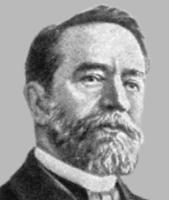

| Люди |
| Исторические сюжеты |
| Филдсовские медали |
| Древо Лузина |
| Министры образования |
Алфавитный каталог
А
Б
В
Г
Д
Е
Ж
З
И
К
Л
М
Н
О
П
Р
С
Т
У
Ф
Х
Ц
Ч
Ш
Щ
Э
Ю
Я
A B C D E F G H I J K L M N O P Q R S T U V W X Y Z
A B C D E F G H I J K L M N O P Q R S T U V W X Y Z
|
|
|  |
Клейн Кристиан Феликс
(25.04.1849 - 22.06.1925)
См. также:
Феликс Клейн. С.Гиндикин, "Квант", 1975, ? 12.
Источник: Математический энциклопедический словарь. М., Сов. энциклопедия, 1988
Книги
| Автор(ы) | Название | Год | Стр. | Загрузить, Mb | ||||
| djvu | ps | html | TeX | |||||
|
|
Неевклидова геометрия. | 1936 | 355 | 11.91 | - | - | - | - |
|
|
Высшая геометрия. | 1939 | 400 | 5.83 | - | - | - | - |
|
|
Лекции о развитии математики в XIX столетии. Часть 1. | 1937 | 432 | 11.88 | - | - | - | - |
|
|
Элементарная математика с точки зрения высшей. Том 1. | 1987 | 431 | 5.26 | - | - | - | - |
|
|
Элементарная математика с точки зрения высшей. Том 2. | 1987 | 416 | 4.38 | - | - | - | - |
Новости
04.08.2018
Присуждены Филдсовские премии-2018
30.07.2018
Прошла летняя школа «Современная математика», теперь имени Виталия Арнольда.
04.12.2014
доступны труды А.Н.Крылова и А.Пуанкаре
01.10.2015
"Мат.этюды" выпустили книгу «Математическая составляющая».
06.03.2013
Новые
арифметические ребусы для iГаджетов
Учительская | Консультации | История математики | Задачи | Учредители и спонсоры | Вход для редакторов
© Copyright